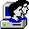

Junior DevOps / Cloud Infrastructure / Backend
 GitHub: AtechPro
GitHub: AtechPro
01170745731
Kota Kinabalu / Remote | Malaysian Citizen | Open to relocation (KL / Sabah)
Microsoft(R) Windows 98
(C)Copyright Microsoft Corp 1981-1999.
C:\> WORK_EXPERIENCE.EXE
> Field Engineer — I Seen Technology Sdn Bhd
[April 2026 - May 2026 | Kota Kinabalu]
- Installed and configured AV systems, PCs and related IT equipment across multiple client sites, and performed troubleshooting and preventive maintenance to replace inconsistent manual support with structured on-site technical service.
- Produced daily technical reports covering completed preventive maintenance, installations and issue resolution, improving service tracking and operational accountability.
- Coordinated directly with site stakeholders to negotiate scheduling, manage unpredictable travel demands and ensure timely task completion across multiple deployment environments.
> Full Stack Developer Intern — Lenog Plant Service Sdn Bhd
[Mar 2025 - Aug 2025]
- Built and deployed a full-stack Letter Generation System (Flask, JavaScript, Docker, Linux / DigitalOcean) that replaced a manual Word-based workflow, standardising documents and cutting the processing time per letter.
- Built and deployed a mobile-responsive Valve Reporting System (Flask, JavaScript, Docker, Caddy, Linux) to digitise manual field reporting, improving reporting accuracy and field data collection.
- Managed NAS-to-SSD on-premise backup and researched cloud backup options, and owned both services end-to-end from code to container to Linux host.
C:\> _
Always-on private lab I design, build and maintain myself, running across bare metal and containers.
Private infrastructure — no public repository. Happy to walk through the setup.
Modular IoT automation system built from the hardware up — Raspberry Pi hub with ESP8266/ESP32 nodes over MQTT.
My cloud engineering working repository — the most recent work in it is Terraform, as I convert my homelab and cloud experiments into declared infrastructure.
Amirul-Qayyum-Resume.pdf
Looking for a role-specific version? Email mirulqayyum@outlook.com and I will send the Cloud, DevOps, Backend or Network variant.
Items in Recycle Bin:
 Manual_Workflow.md (0 KB)
Manual_Workflow.md (0 KB)
 copy_of_final_v3_FINAL.docx (0 KB)
copy_of_final_v3_FINAL.docx (0 KB)
Both deleted 2025. Neither is coming back.
Yokoso Watashi no Portfolio Website

Who This? Sepa Ni?? だれですが？ 是谁呢？🤔My name is Amirul Qayyum Bin Sikambar. Some would call me IllyaAtech; online I am AtechPro. I am a Network Engineering graduate who extends into DevOps — Linux, containers and the infrastructure that holds them together.
Want to talk infrastructure? mirulqayyum@outlook.com

Centralized Hub Home Automation — schematic diagram (1st module preview). Source: github.com/AtechPro/chha
ESP8266/ESP32 nodes (KY-010 photoresistor, KY-019 relay, PIR sensor, MQ-2 gas sensor) reporting over MQTT to the Raspberry Pi hub.